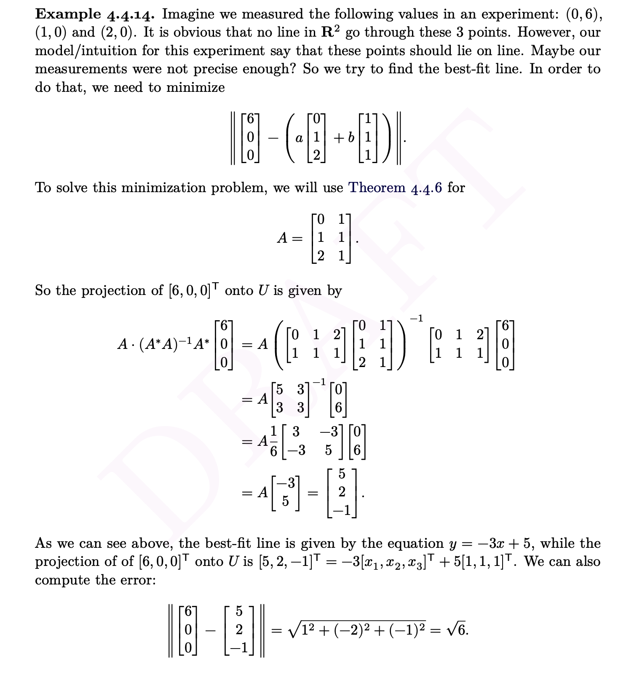
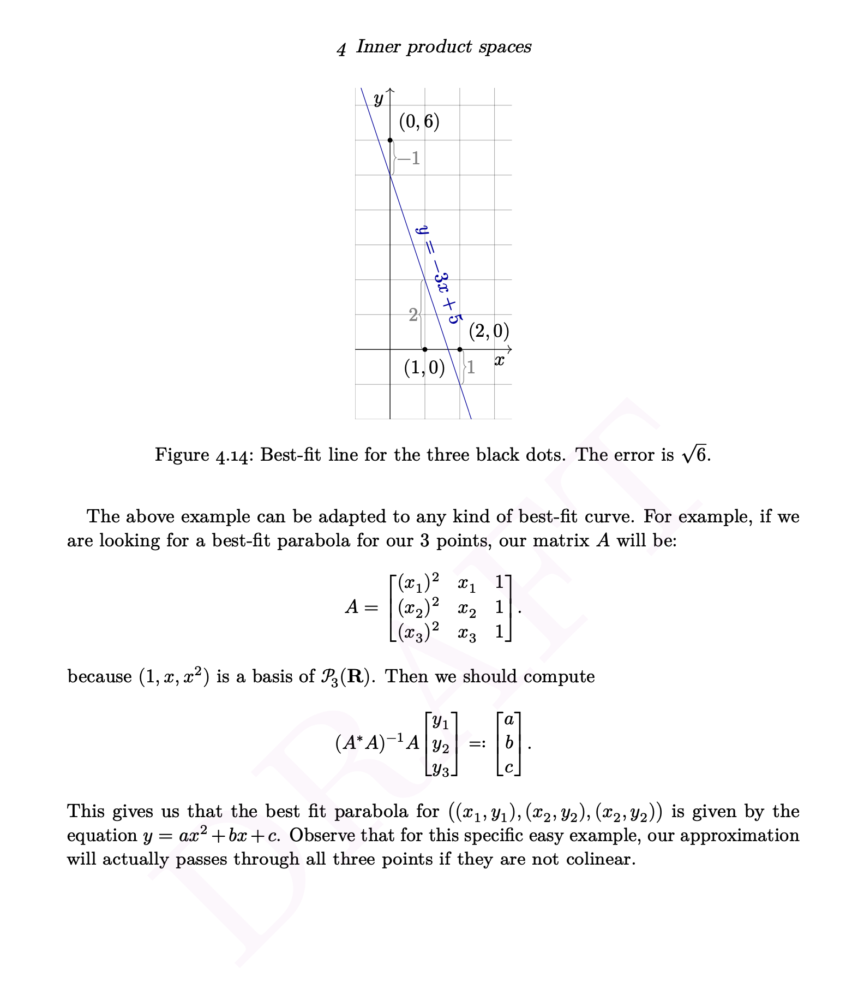
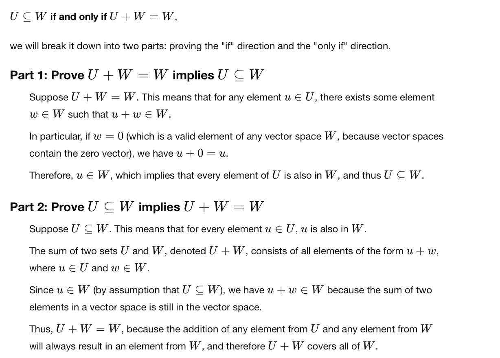
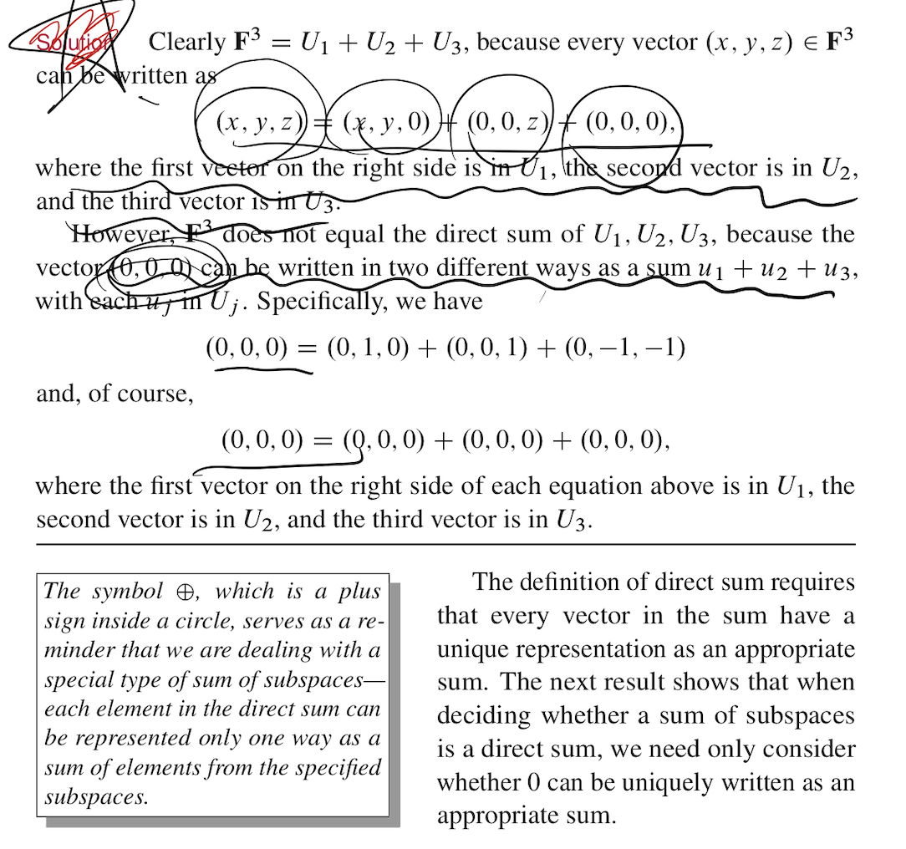
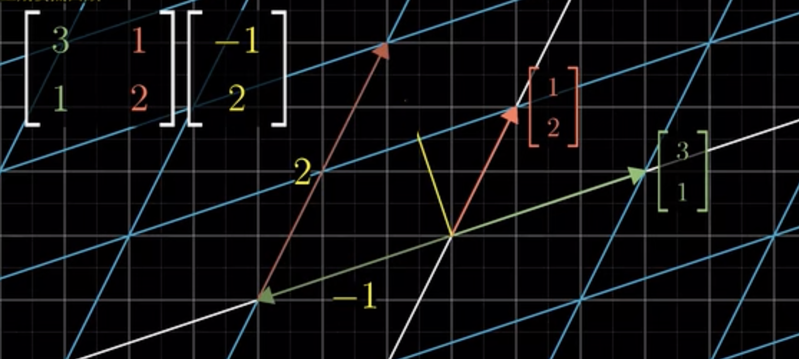
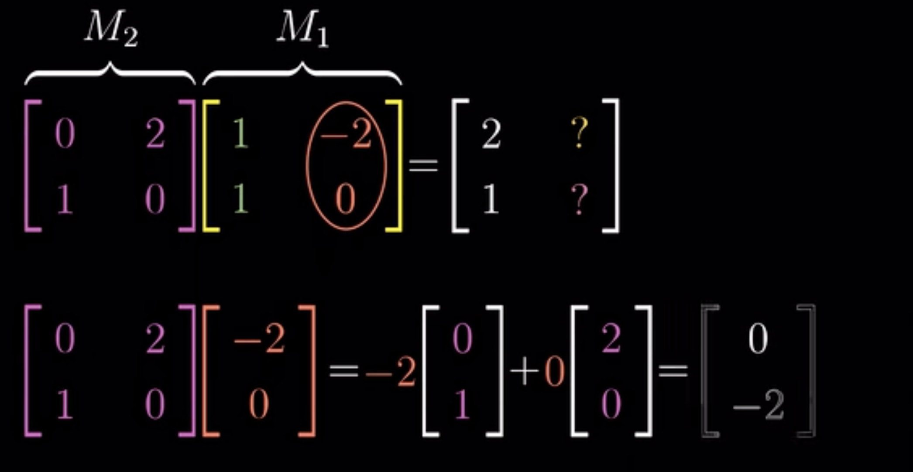
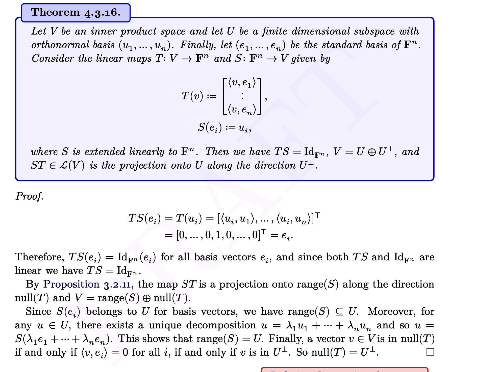
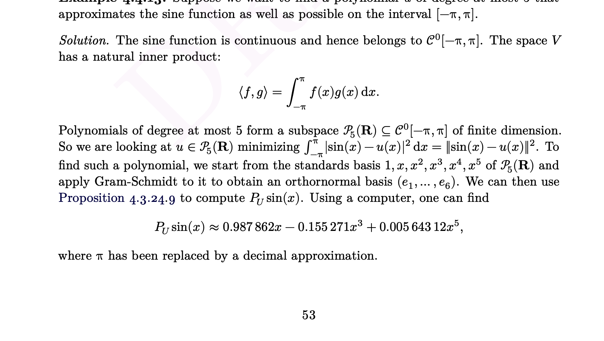
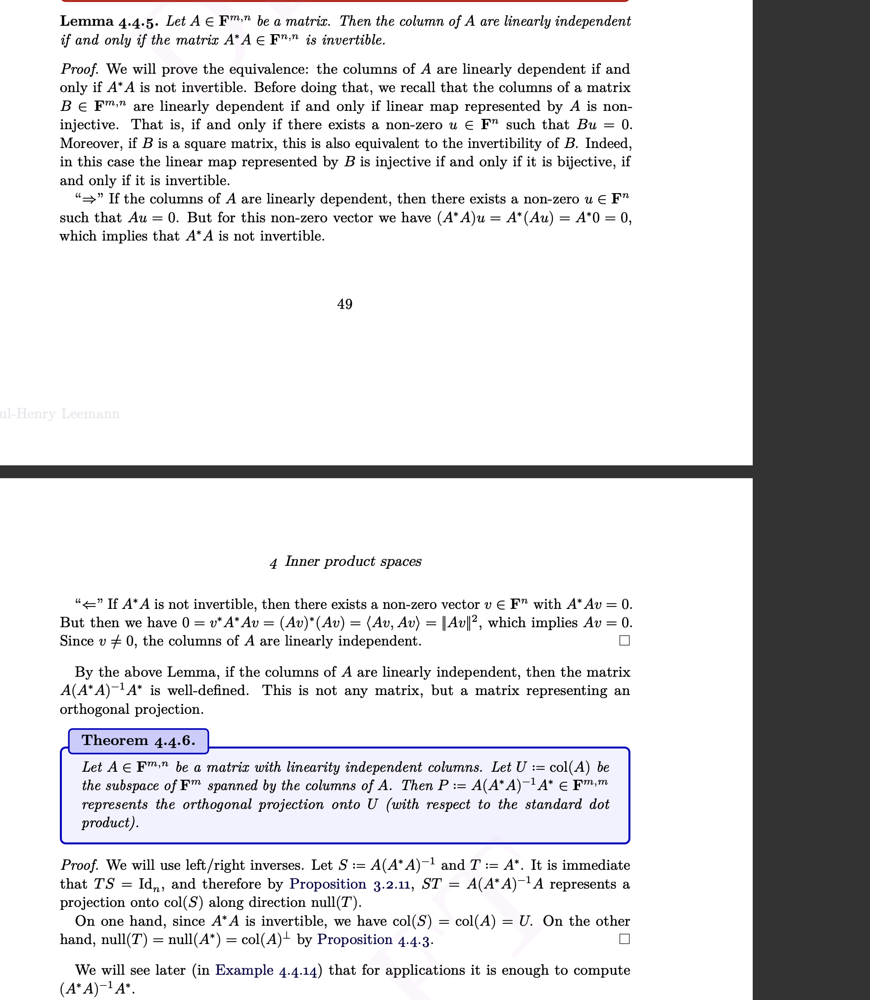
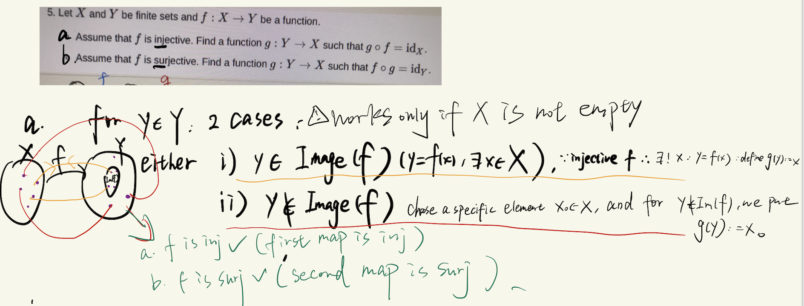

MTH107—NOTEs
Preface
The first section here is the knowledge that attracts most of my interests on this module, followed by the lecture notes I tapped when I am on the journey of this module.
Thanks
I feel so lucky to learn from Professor Paul-Henry Leemann. He teaches Linear Algebra very well. He not only teahces us how to solve tutorials, but also the real application in the real world such as the application of eigenvectors on Google search. He is also a kind, responsible and humorous teacher. His lecture notes are clean and clear with multiple good examples helping us to understand more effectively.
Professor Andrew Lin teaches Linear Algebra very very well and interesting. He teaches me many tips to help me never remember sth., understand totally instead.
The most interesting thing (I think) in this module—Jordan form
Eigenvalue and Eigenspace
An operator on V has a diagnalizable matrix representation if it has the same number as dimV of eigenvectors .
However, some operators have not enough eigenvectors to span a whole vector space so that the matrix could not be as simple as a diagnalizable matrix.
Generalized eigenspace
\(A=PJ_{\lambda}P^{-1}\)
When P has linearly independent vectors(eigenvectors), A is diagonalizable
So we introduce the Jordan form which is as simple as possible, though not much simple as a diagnal matrix, which need generalized eigenvector to get P—\((A-\lambda I)^2x_2=(A-\lambda I)x_1=0\)
Since \(A=PJ_{\lambda}P^{-1}\), P=[\(x_1,x_2\)], AP=A[\(x_1,x_2\)]=[\(\lambda x_1, \lambda x_2+x_1\)]=PJ=[\(x_1,x_2\)]=\(\left[\begin{array}{ll}\lambda & 1 \\ 0 & \lambda\end{array}\right]\)
The introduce of generalized eigenspaces makes a matrix as simple as possible, though not much simple as a diagnal matrix for computation.
Cayley Hamlton Thm
V a finite dimensional vector space then \(\chi_T(T)=0_{l(v)}\)
eg. A=$
Jordan form makes me understand Linear Algebra more deeply, which also introduces differential equations to me
J = \(\lambda I+ N\), where N is a nilpotent matrix —D-N decomposition A = D +N DN = ND
eg.\(e^A=e^{D+N} ?= e^De^N\)
$e^{tJ_}= e^{tI} $\(e^{tN}\)=\(e^{t\lambda} [I+N+t^2/2! N^2+.....]\)
The characteristic polynomial tells us the eigenvalues and the dimension of each generalized eigenspace, which is the number of times the eigenvalue appears along the diagonal of the Jordan form (also known as the “multiplicity” of λ)
Each Jordan block with respect to a basis of an eigenvector and others are generalized eigenvectors which could be computed based on the eigenvector and \((T-\lambda Id)^m,\)where m\(\leq dimV\)since the dimension of each eigenspace tells us how many Jordan blocks corresponding to that eigenvalue there are in the Jordan form. This also means that the Jordan form is unique with permutation but the Jordan basis is not unique.
The size of the largest Jordan block corresponding to an eigenvalue λ of T is exactly the degree of the (t − λ) term in the minimal polynomial of T .i.e. The exponents of the different terms in the minimal polynomial tell us the sizes of the largest Jordan blocks corresponding to each eigenvalue.
To kill off a Jordan block of size k, we need the polynomial \((t-\lambda)^k\). Any smaller Jordan block with the same eigenvalue will also be killed off under this polynomial
- We could explain it more clearly
For one simple situation, which is the Jordan form with only 1 block
Since the minimal polynomial applied by the operator T on V (\(M_T(T)\)) must be 0, the Jordan form with only 1 block has the minimal polynomial (t-\(\lambda\))\(^{dimV}\)
More generally, if we have a Jordan form with 2 blocks B and C, with one same eigenvalue, Since the minimal polynomial applied by the operator T on V (\(M_T(T)\)) must be 0, \((T-\lambda I)^m\) in \(M_T(T)\) should have m satisfying \((B-\lambda I)^m=0\) and \((C-\lambda I)^m=0\). In this case, since any smaller Jordan block with the same eigenvalue will also be killed off under the \((T-\lambda I)^m\) in \(M_T(T)\), when the largest Jordan block is 0, smaller blocks are also 0. What is more, if \(\exists\) a block with dimension greater than the power of the corresponding term in the polynomial, there then is a contradiction to the defination of the minimal polynomial(must be 0). If the largest Jordan block has the dimension strictly less than the power of the corresponding term in the polynomial, there then also is a contradiction to the defination of the minimal polynomial(smallest power)
Each block has a basis of eigenvector and other basis are generalized eigenvector which are linearly independent.
More precisely, each term with power 1, means that the restriction of T to the corresponding generalised eigenspace is diagonalisable.So the minimal polynomial’s each term with the power of 1 means the matrix representation of the operator is diagonalizable, and each eigenvalue has the same number of corresponding power of characteristic polynomial’s term of linearly independent eigenvectors.
The relationship between the direct sum(decomposition) and diagolizable
- If A:V–> V, A is diagonalizable then V=RangeA direct sum NullA (proof idea: clarify the basis of A by the non-zero element and zero element on the diagonal of the diagonal shape matrix of A. Based on them we could find the basis of RangeA and NullA which span V while with the intersection of {0})
The relationship between Jordan form and diffrential equation
Diagnalize 2 matrix at the same time
Least-square in regression analysis
This motivates me since I love regeression questions on Statistics
?? This will always have solution since if A has linearly independent columns then \(A^*A\) is invertible
a simple example


study motivation
- Good intuitively explanation for a Thm or… >> symbolic proof(just like I do not like \(\epsilon-\delta\) language in Analysis)
Chapter 0: motivation/reviews
Linearty is everywhere–Linearty is the easiest one
matrix-vector multiplication
differentiation/integration
ODE(mth106)
Recurrence Relations and Statistical Models
comparison
Real R space
A matrix A in this space is a real matrix, which maps vectors in \(\mathbb{R^n}\) to another vector in \(\mathbb{R^n}\) through multiplication: \[ A: \mathbb{R^n} \to \mathbb{R^n} \] \[ A \cdot v = w \in \mathbb{R^n} \]
real matrix
concrete
Abstract vector space over R or C
linear transformation: \[ T: V \to W \] abstract and more general vector space over \(\mathbb{R^n}\) or \(\mathbb{C^n}\)
Notations
\[ a \in A \] eg. \[ 3 \in \mathbb{Z} \]
\(\emptyset\)
Two sets A and B are equal if and only if they contain the same elements: \[ A = B \] if and only if \[ \forall x \, (x \in A \iff x \in B) \] \[ A \subseteq B\]
intersection: \[ A \cap B\]
union: \[ A\cup B \]
Maps
maps(functions)
\[ f: A \to B, \quad a \mapsto f(a) \] composition: Given two functions \(f: B \to C\) and \(g: A \to B\), the composition of f and g is denoted as: \[ (f \circ g)(x) = f(g(x)), \quad \text{for all} \, x \in A \]
\[ a \mapsto c(a \mapsto b \mapsto c) \]
injective–one to one
if \(a_1 \neq a_2\) then \(f(a_1) \neq f(a_2)\)
if \(f(a_1) = f(a_2)\), then \(a_1=a_2\)
surjective–onto
for \(f: A \to B\)
\[ \forall b \in B, \, \exists a \in A \, \text{such that} \, f(a) = b \]
bijetive–both inj and suj
for \(f: A \to B\) \[ \forall b \in B, \, \exists! a \in A \, \text{such that} \, f(a) = b \] （use \(\exists!\)expresses only exist one）
f: x–>y is a bijection if and only if \(\exists\)g:y—>x, s.t. f(g(y))=\(id_y\) and g(f(x))=\(id_x\)
subsets,inclusions, restrictions
subsets
\(A \subseteq B\)
empty set is a subset of every set B.
\[ \emptyset \to B \]
inclusion
if A \(\subseteq\) B, we have a map: \[ \iota: A \to B \]
\[ \iota(a) = a \], called the inclusion of A (into B)
restriction
That is:
if A \(\subseteq\) B and \(f:B \to C\), we have a map for all a \(\in\) A: \[ f|_A: A \to C \]:
\[ f|_A(a) = f(a) \] called the restriction of f to A
\[ f|_A = f \circ \iota_A \] because \[ f \circ \iota_A(a)=f(\iota_A(a))=f(a)=f|_A(a) \]
the reason to define it:
- domains differ
For example, consider a map \(g|_B: B \to C\), where the function takes each element \(x\) and maps it to \(x + 2\). Let the sets be as follows:
\(A = \mathbb{N} \subseteq B = \mathbb{R}\)
\(C = \mathbb{R}\) is the codomain of the function.
The map \(g\) is defined as: \[ g: B \to C, \quad g(x) = x + 2 \quad \text{for all } x \in B \]
Now, consider the restriction of \(g\) to \(A\), denoted \(g|_A: A \to C\), where: \[ g|_A: A \to C, \quad g|_A(x) = x + 2 \quad \text{for all } x \in A \]
Although both \(g: \mathbb{R} \to \mathbb{R}\) and \(g|_A: \mathbb{N} \to \mathbb{R}\) follow the same rule \(x \mapsto x + 2\), they cannot be considered the same map because their domains differ.
(here, A \(\subseteq\) B)
- focus on the specific area within the whole area
set of all maps from A to B(f)
if a and b are sets we define \(B^A={f:A--->B (map)}\) the set of all maps from A to B
\[ B^A = \{ f: A \to B \} \] \(B^\emptyset = \{ \emptyset \to B \}\) has only 1 element even if B=\(\emptyset\)
- The set \(B^{\emptyset}\) contains only the zero function. proof: suppose f,g \(\in\) \(B^\emptyset = \{f: \emptyset \to B \}\), imagine f != g, we can derive \(\exists x \in \emptyset\) s.t. f(x) != g(x), which is absurd, so f=g
suppose the only one element is sth.:
sth. should follow the quality of the set, which is:
sth. + sth. = sth.
\(\lambda\)sth. =sth.
so sth. = 0
relevant to cardinality:
(Def: let A be a.set, if A containsfinitely many elements, then the number of elements of A is called the cardinality of A, denoted by |A|(|A|\(\in Z_{\geq0}\))
|| #
|A|: number of elements in A(set))
if A and B are finite sets #A=n #B=m, then \(|B^A| = m^n\) (ok)
Chapter 1: vector spaces
finite space
For finite spaces ,only R^n and C^n.
(For infinite spaces, there are many, e.g. a continuous set: [0,1] to …)
R^n notification
\[ \mathbb{R}^n = \{ (x_1, x_2, \dots, x_n) \mid x_i \in \mathbb{R} \text{ for } i = 1, 2, \dots, n \} \] real numbers
define 2 oprations on the set R^n
addition: \[ (x_1, x_2, \dots, x_n) + (y_1, y_2, \dots, y_n) = (x_1 + y_1, x_2 + y_2, \dots, x_n + y_n) \]
Left-hand side: \((x_1, x_2, \dots, x_n), (y_1, y_2, \dots, y_n) \in \mathbb{R}^n\)
Right-hand side: The result of \(x_i + y_i\) is in \(\mathbb{R}\).
scalar multiplication: for lambda \(\in\) R,
\[ \lambda \cdot (x_1, x_2, \dots, x_n) = (\lambda x_1, \lambda x_2, \dots, \lambda x_n) \]
Left-hand side: \(\lambda \in \mathbb{R}, (x_1, x_2, \dots, x_n) \in \mathbb{R}^n\).
Right-hand side: The result \(\lambda x_i \in \mathbb{R}\), for each i.
these 2 oprations generalize the standard operations on R2 and R3
geometric realization
矢量三角形–addition
直线上–scalar multiplication
mention: for n greater than or equal to 4 we cannot visualize vectors in the real world but e can still use them to solove real world problems
if a and b are finite sets
to simplify notations we sometimes use a single letter for vectors:
x= \(\vec x\) =(x_1,x_2,….)
R^n as a vector space
so we have(rn,+, mutiplication notation). the operations satisfies some useful properties that turn rn into a real vector space
relation between rn and + .
\((R^n,+,\cdot)\)
it means that + and \(\cdot\) satisfy the following axioms:
\(\forall x,y \in rn\): x+y=y+x. commutativity
\(\forall x,y,z \in rn\): (x+y)+z=x+(y+z). associativity
x + 0 = 0 + x neutral element for addition
\(x + (-x) = (-x) + x = 0\)
——inverse for addition -x=y
\(1 \cdot x = x\) Identity Element for Scalar Multiplication
\((\lambda \mu) \cdot x = \lambda \cdot (\mu \cdot x)\) compatibilily of multiplication
\(\lambda \cdot (x + y) = \lambda \cdot x + \lambda \cdot y\) Distributivity of Scalar Multiplication Over Vector Addition
\((\lambda + \mu) \cdot x = \lambda \cdot x + \mu \cdot x\) Distributivity of Scalar Addition
?
also fn—f{1,..,n}
5st ahead and the other 3（prove？eg tutorial1）. should we prove again or directly use them? tutorial 1 vs. 2 ’ s proof. ask again, sorry: since negative number set satisfies 2 oprations but not 8 axioms I want to ensure if a finite set satisfies the 2 operations it is not satisfy all 1-8 axioms instead of F^n so if the problem is a vector space V, we could directly suppose \(\exists u\in F\) and then do the scalar multiplication in it?
is that because of the defination of F-vector space?(abstract vector space-defination)
Cn complex Vector Space
\(i^2 = -1\)
Define \(\mathbb {C}^n\) as the set of all ordered n-tuples of complex numbers: \[ \mathbb{C}^n = \{ (z_1, z_2, \dots, z_n) \mid z_i \in \mathbb{C}, \, i = 1, 2, \dots, n \} \]
Operations on C^n
We define addition and scalar multiplication on \(\mathbb{C}^n\) in the same way as we did on \(\mathbb{R}^n\), but using complex numbers:
Addition:
For two vectors \((z_1, z_2, \dots, z_n)\) and \((w_1, w_2, \dots, w_n) \in \mathbb{C}^n\):
\[ (z_1, z_2, \dots, z_n) + (w_1, w_2, \dots, w_n) = (z_1 + w_1, z_2 + w_2, \dots, z_n + w_n) \]
Scalar Multiplication:
For a scalar \(\lambda \in \mathbb{C}\) and a vector \((z_1, z_2, \dots, z_n) \in \mathbb{C}^n\):
\[ \lambda \cdot (z_1, z_2, \dots, z_n) = (\lambda z_1, \lambda z_2, \dots, \lambda z_n) \]
Thus, \((\mathbb{C}^n, +, \cdot)\) is a complex vector space because it satisfies the vector space axioms 1-8, where we replaced \(\mathbb{R}^n\) with \(\mathbb{C}^n\). Many of the results from MTH107 will hold regardless of whether we are using \(\mathbb{R}\) or \(\mathbb{C}\), so we will often use \(\mathbb{F}\) to represent either \(\mathbb{R}\) or \(\mathbb{C}\).
For example, \(\mathbb{F}^n\) is an \(\mathbb{F}\)-vector space, where \(\mathbb{F}\) could be either \(\mathbb{R}\) or \(\mathbb{C}\).
Generalization (Not on the Exam):
Finite Field Example:
\(\mathbb{F}_2 = \{0, 1\}\): the finite field with two elements.
Many of our results hold in a more general setting, where \(\mathbb{F}\) is a field—a set in which we can perform addition, multiplication, subtraction, and division (except division by zero).
Examples of fields include:
- \(\mathbb{R}\): the real numbers
- \(\mathbb{C}\): the complex numbers
- \(\mathbb{Q}\): the rational numbers
- \(\mathbb{F}_2 = \{0, 1\}\): the finite field with two elements
Abstract Vector Space:
We can generalize this idea by replacing \(\mathbb{F}^n\) with some abstract space \(V\), define addition \(+\) and scalar multiplication \(\cdot\), and check if they satisfy the eight vector space axioms.
Definitions:
For a set \(V\), addition on \(V\) is a map:
\[ V \times V \to V \]
It maps an element set to their addition. For example, if \(V = \mathbb{R}^2\):
\[ (v, w) \mapsto v + w \]
Example: \((1,2) + (3,4) = (4,6)\), which is also in \(V\).
A scalar multiplication is a map:
\[ F \times V \to V \]
For example, \((\lambda, v) \mapsto \lambda v\).
(remark:if V and W are sets, V\(\times\) W = {(v,w)|v\(\in\) V, w\(\in\) W})
An \(F\)-vector space is a set \(V\) with an addition \(+\) and scalar multiplication \(\cdot\) by elements of \(F\), such that \((V, +, \cdot)\) satisfies the vector space axioms 1-8, where \(\mathbb{R}\) is replaced by \(F\), and \(\mathbb{R}^n\) is replaced by \(V\).
Remarks and Examples:
- Vectors: Vectors are elements of \(V\), denoted as \(v \in V\).
- Field \(F\): The choice of \(F\) matters! For example, we will see later that \(\mathbb{C}^n\) is a complex vector space of dimension \(n\), but is also a real vector space of dimension \(2n\).
？prove？
above field F
107’s learning need of C
2n proof???
Examples:
For any field \(F\),
Trivial Vector Space: the set \(V = \{0\}\) is a trivial \(F\)-vector space with addition \(0 + 0 = 0\) and scalar multiplication \(\lambda \cdot 0 = 0\).
Finite-Dimensional Vector Space: \(F^n\) is an \(F\)-vector space, and \(F^0 = \{0\}\).
Infinite-Dimensional Vector Space: Let \(F^\infty\) be the space of infinite sequences, where:
\[ F^\infty = \{ (x_1, x_2, \dots) \mid x_i \in F, \, i = 1, 2, \dots \} \]
Addition and scalar multiplication are defined component-wise:
\[ (x_1, x_2, \dots) + (y_1, y_2, \dots) = (x_1 + y_1, x_2 + y_2, \dots) \]
- Function Space: Let \(S\) be a set, then:
\[ F^S = \{ f: S \to F \, \text{(maps from S to F)} \} \]
Addition and scalar multiplication are defined pointwise. For functions \(f, g \in F^S\) and \(\lambda \in F\):
\[ (f + g)(x) = f(x) + g(x) \quad \forall x \in S \]
\[ (\lambda \cdot f)(x) = \lambda \cdot f(x) \quad \forall x \in S \]
\(F^S\) is an F-vector space
?
does this thing have more explaination except for f：s to F
is there any quick way to think this kind of question instead of proving 8 axioms one by one? such as geometry meaning like keep straight line and parallelogram in linear transformation
proof of FS
\(F^S\) is a vector space
Proof: we need to check the 8 axioms from the defination
(core: use the element here to x and then see the equality of the 2 function on the each side of the equality using the quality of \(\mathbb F^n\))
- f + g = g+f?
these 2 functions ((f+g)(x) and (g+f)(x)) are equal if and only if they have values agrees on every \(s \in S\)
\[ (f+g)(x)=f(x)+g(x) \] which is \(\in F\) so it is equal to g(x)+f(x)(addition axiom)=(g+f)(x)
2)(f+g)+h = f+(g+h)
[(f+g)+h](x)=(f+g)(x)+h(x)=[f(x)+g(x)]+h(x), which are \(\in F\), so
=f(x)+[g(x)+h(x)](axiom 3)=f(x)+(g+h)(x)=[f+(g+h)](x)
- \(\exists 0: 0+f=f\) for any \(f \in F^S\)
yes, define the zero function \(0_F:\) to be the constant function \(0_F\), i.e. \(0_F(x)=0_F\)
- for \(f\in F^S\), can we find an inverse?
-f is defined by (-f)(x)=-f(x)
check: (f+(-f))(x)=f(x)+(-f(x))=\(0_F\)
so f+(-f)=\(0_{F^S}\)
1f=f \(（1\cdot f)(x)=1\cdot f(x)(\in F)=f(x)\)
(ab)f=a(bf)
pass
7)a(f+g)=af+ag
a(f+g)(x)=a(f(x)+g(x))=af(x)+ag(x)=(af+ag)(x)
8)(a+b)f=af+bf
(a+b)f(x)=af(x)+bf(x)
(af+bf)(x)=(af)(x)+(bf)(x)=af(x)+bf(x)
Special Cases:
- Empty Set: If \(S = \emptyset\), then:
\[ F^{\emptyset} = \{ 0 \} \] the proof has been proved above on “set of all maps from A to B(f)”
- Finite Set: If \(S = \{1, 2, \dots, n\}\), then:
\[ F^{\{1, 2, \dots, n\}} = F^n \]
proof of special 2:
Let \(F^n\) represent the n-dimensional vector space over a field \(F\), and \(F^{\{1, \dots, n\}}\) represent the set of functions from the set \(\{1, \dots, n\}\) to \(F\), i.e., it assigns a scalar from \(F\) to each index in \(\{1, \dots, n\}\).
We will prove that there exists a linear map \(T: F^n \to F^{\{1, \dots, n\}}\) such that:
- \(T\) is a bijection (i.e., both injective and surjective).
- \(T\) preserves addition: \[ T(f + g) = T(f) + T(g) \] for all \(f, g \in F^n\).
- \(T\) preserves scalar multiplication: \[ T(a f) = a T(f) \] for all \(f \in F^n\) and \(a \in F\).
A map that satisfies these two conditions is called a linear map, and we will learn about it later in class. A linear map that is a bijection is called an isomorphism.
Define the Map \(T\)
Define the map \(T: F^n \to F^{\{1, \dots, n\}}\) as follows:
For each vector \((a_1, a_2, \dots, a_n) \in F^n\), define the corresponding function \(T((a_1, a_2, \dots, a_n)) = f \in F^{\{1, \dots, n\}}\) by: \[ f(i) = a_i \quad \text{for each} \, i = 1, 2, \dots, n. \] Thus, \(T((a_1, a_2, \dots, a_n)) = (f(1), f(2), \dots, f(n)) = (a_1, a_2, \dots, a_n)\).
Injectivity: \(T((a_1, a_2, \dots, a_n)) = T((b_1, b_2, \dots, b_n))\). This implies that for each \(i\), \(a_i = b_i\). Therefore, \((a_1, a_2, \dots, a_n) = (b_1, b_2, \dots, b_n)\), so \(T\) is injective. i.e. if \(T(a_1,...a_n)=T(b_1,...,b_n)\), then \(\forall i,\) T(a)(i)=ai=T(b)(i)=bi,so\(\forall i,a_i=b_i\),we need a=b
Surjectivity: Given any function \(f \in F^{\{1, \dots, n\}}\), we can find a vector \((a_1, a_2, \dots, a_n) \in F^n\) such that \(f(i) = a_i\) for each \(i = 1, 2, \dots, n\). Therefore, \(T\) is surjective.
i.e., given \(f\in \mathbb F^{\{1,..n\}}\), then T(f(1),…f(n))=f with (f(1),…f(n))\(\in F^n\)(T is {1,..n}–>F) with (f(1),…f(n))\(\in F^n\)
Since \(T\) is both injective and surjective, it is a bijection.
Prove that \(T\) Preserves Addition
Let \((a_1, a_2, \dots, a_n), (b_1, b_2, \dots, b_n) \in F^n\). Then:
\[ T((a_1, a_2, \dots, a_n) + (b_1, b_2, \dots, b_n)) = T((a_1 + b_1, a_2 + b_2, \dots, a_n + b_n)). \]
\[ f(i) = a_i + b_i, \quad i = 1, 2, \dots, n. \] (the definition of \(T\)) the other hand site: \[ T((a_1, a_2, \dots, a_n)) + T((b_1, b_2, \dots, b_n)) = (a_1, a_2, \dots, a_n) + (b_1, b_2, \dots, b_n), \] which results f, also.
Prove that \(T\) Preserves Scalar Multiplication
Let \((a_1, a_2, \dots, a_n) \in F^n\) and \(c \in F\). Then: \[ T(c \cdot (a_1, a_2, \dots, a_n)) = T((c a_1, c a_2, \dots, c a_n)). \]
\[ f(i) = c a_i, \quad i = 1, 2, \dots, n. \] (the definition of \(T\))
the other hand site: \[ c \cdot T((a_1, a_2, \dots, a_n)) = c \cdot (a_1, a_2, \dots, a_n), \] which also results in \(f\)
Since T is an isomorphism (bijection + linear), then \(T^{-1}\) is automatically linear. That is we automatically have \(T^{-1}(x+y)= T^{-1}(x)+ T^{-1}(y)\), and the same for scalar multiplication. So they are the same in vector space, too.
We have shown that \(T\) is a bijection and preserves both addition and scalar multiplication. Therefore, \(T\) is a linear isomorphism, and \(F^n\) and \(F^{\{1, \dots, n\}}\) are isomorphic as vector spaces.
(Last remark: If \(T\) is an isomorphism (i.e., bijective and linear), then \(T^{-1}\) is automatically linear. That is, we automatically have \(T^{-1}(x + y) = T^{-1}(x) + T^{-1}(y)\), and the same holds for scalar multiplication. Therefore, there is no need to check these properties for \(T^{-1}\).)
(a more detailed one proving bijetive: \(F^{\{1, 2, 3, \dots, n\}}\) is Equivalent to \(F^n\)
To prove that \(F^{\{1, 2, 3, \dots, n\}}\) is equivalent to \(F^n\), we show there is a bijection between the two sets, meaning each element in \(F^{\{1, 2, 3, \dots, n\}}\) corresponds to a unique element in \(F^n\), and vice versa.
By definition, \(F^{\{1, 2, 3, \dots, n\}}\) is the set of all functions from \(\{1, 2, 3, \dots, n\}\) to \(F\). Each function \(f\) can be written as:
\[ f = (f(1), f(2), \dots, f(n)). \]
\(F^n\) is the set of ordered \(n\)-tuples \((a_1, a_2, \dots, a_n)\), where each \(a_i \in F\).
Mapping from \(F^{\{1, 2, 3, \dots, n\}}\) to \(F^n\)—
For any function \(f \in F^{\{1, 2, 3, \dots, n\}}\), we define the corresponding tuple in \(F^n\) as:
\[ T(f) = (f(1), f(2), \dots, f(n)). \]
Mapping from \(F^n\) to \(F^{\{1, 2, 3, \dots, n\}}\)—-
For any tuple \((a_1, a_2, \dots, a_n) \in F^n\), define the corresponding function in \(F^{\{1, 2, 3, \dots, n\}}\) as:
\[ T^{-1}(a_1, a_2, \dots, a_n)(i) = a_i, \quad \text{for each } i \in \{1, 2, \dots, n\}. \]
Let \(f \in F^{\{1, 2, 3, \dots, n\}}\)–
\[ T(f) = (f(1), f(2), \dots, f(n)). \]
then, define
\[ T^{-1}(f(1), f(2), \dots, f(n))(i) = f(i), \quad \text{for each } i \in \{1, 2, \dots, n\}. \]
Thus,
\[ T^{-1}(T(f)) = f. \]
Let \((a_1, a_2, \dots, a_n) \in F^n\). Applying \(T^{-1}\), we get the function \(f\) such that \(f(i) = a_i\) for each \(i\). And then,
\[ T(T^{-1}(a_1, a_2, \dots, a_n)) = (a_1, a_2, \dots, a_n). \]
Thus,
\[ T \circ T^{-1} = \text{id}_{F^n}. \] This equation means that for any element \((a_1, a_2, \dots, a_n) \in F^n\), applying \(T^{-1}\) to obtain a function \(f\), and then applying \(T\) to \(f\), returns the original tuple:
\[ T^{-1} \circ T = \text{id}_{F^{\{1,2,3,...n\}}}. \]
This equation means that for any function \(f \in F^{\{1, 2, 3, \dots, n\}}\), applying \(T\) to obtain a tuple \((f(1), f(2), \dots, f(n))\), and then applying \(T^{-1}\) to that tuple, returns the original function:
Since \(T\) and \(T^{-1}\) are inverses of each other, we have established a bijection between \(F^{\{1, 2, 3, \dots, n\}}\) and \(F^n\). Therefore, \(F^{\{1, 2, 3, \dots, n\}}\) and \(F^n\) are equivalent as sets and vector spaces.)
linear transformation makes us know everything
二维映射到三维的linear transformation’s geometric meaning： if you know a transformation， then you know everything
General properties of vector space
Let V be a vector space over F
We will prove some properties of V using only the defination (axioms 1-8)
Proposition
- The zero(additive identity) is unique. That is: \(\exists ! 0\in V s.t. 0+V=V, \forall v\in V\)
proof: Suppose we have 2 zero elements: 0 and 0’
0=0’+0=0+0’=0’
- \(\forall v\in V\) there exists a unique additive inverse
Supppose w and w’ are 2 inverses for v, w=0+w=(v+w’)+w=v+(w’+w)=v+(w+w’)=(v+w)+w’=0+w’=w’
- \(\forall v\in V\), \(O_F\cdot V=O_V\)
?
怎么想到的 why \(0_F\cdot V=0_V+w\) F—>V????
why we could think of let w be the inverse of \(0_F\cdot V\)? I always just could recite I mean remember the process instead of write it down smoothly
(see 0_f as 0 is also okay)
proof: \(0_F\)\(\cdot\)V= \((0_F+0_F)\)\(\cdot\)V=\(0_Fv+0_Fv\)
let w be the inverse of \(0_F\cdot v\)(use proposition 2)
then \(0_V\)=\(0_F\cdot v+w\)=\((0_Fv+0_Fv)+w=0_Fv+(0_Fv+w)=0_Fv\)
- \(\forall x\in F: x\cdot O_V=O_F\)
proof: \(x\cdot 0_V=x\cdot (0_V+0_V)=x\cdot 0_V+x\cdot 0_V\)
so \(0_V=x\cdot 0_V\)
?
difference between o_Fv=0_v and xo_v=0_f(3 and 4 proposition)
Property
\(\forall v\in V,(-1)\cdot V=-V\)
proof: V+(-1)V=(1+(-1))\(\cdot\)V=0\(\cdot\)V=0
so (-1)V is an addictive inverse of V
so we finish proof(by the addictive inverse)
reminder of computing inverse of a matrix
method1:
det(A)
每一个位置的det构成的矩阵：B
cofactor matrix:\((-1)^{n+m}\)
C=B\(\times\) cofactor matrix
\(A^{-1}=1/det(A)\) times \(C^T\)
method2: work for the tansformation of a matrix
Chapter 2 Subspaces of Vector spaces
motivation
- if sets have subsets, vector spaces have subspaces.
(Mathematicians study subobjects to understand the big objects better)
Def
Let \(V(V,+_V,\cdot_V)\)(what is the link with restrictions here?: we have \(U\subseteq V\), i.e. U\(\times\)U={(\(x_1,x_2|x_1,x_2\in U\))}\(\subseteq V\times V\), now we have \(+_V|_{U\times U}\):U\(\times U\)–>V, and scalar multiplication is similar to it. ) be a vector space, a subset U of V is a subspace if and only if \(U(U,+_V,\cdot_V)\) is a vector space(for the link with restrictions: Here, for the condition of U being a vector space, we need
\(+_V|_{U\times U}\):U\(\times U\)–>U i.e. for \(u_1,u_2\in U, u_1+_vu_2 \in U, \lambda \cdot_vu_1\in U)\)
\(\cdot_v|_{F\times U}\): \(F\times U\)–>U
\(0_V\in U\)
, which could replace 2 operations and 8 axioms and we will prove later)
ex: R=U\(\subseteq\)V=C (a C-vector space) is not a subspace because scalar multiplication is not internal(i\(\cdot \pi\)is not in R—-not satisfying \(\cdot_v|_{F\times U}\): \(F\times U\)–>U)
—-so we should explicit \(\mathbb F\) when saying vector spaces
?
C r vector space though i including???
(ex: \(\mathbb C\)is a R-vector space and \(\mathbb R \subseteq \mathbb C\) is a R subspace)
Propsition
\(U\subseteq V\)is a subspace if and only if :
a 0
b +
c \(\cdot\)
proof
for 1-8 axioms we only need to prove 4) because others are either included by the proposition or share the qualities of them because the elements in U are the elements in V.
4): there exists only one inverse in U
i.e. V’s inverse is in U
let \(u\in U\), then \(u\in V\) so \(\exists v=(-u)\in V\), we need to check is -u in U s.t. -u+u=\(0_v\):
-u=(-1)u \(\in U\)(scalar multiplication)
eg
- \(\lambda \in \mathbb F\), U:={\(x_1,x_2,x_3,x_4|x_3=5x_4+\lambda\)} is a subset if and only if \(\lambda =0\)
proof:
side one: 0=(0,0,0,0) is in U… and others satisfy the proposition also.
side two: if \(\lambda =0\), let x and y \(\in U\), so \(x_3=5x_4\),\(y_3=5y_4\), so \(x_3+y_3=5(x_4+y_4)\), so the addition is satisfied.
for c, also
\(R_\{geq0}\) is not a vector space–(-1,2)—> (-1)2=-2\(\notin R_{\geq0}\)
\(C^0\)([0,1]):={f:[0,1]–>R, continuous} is a subspace \(\mathbb R^{[0,1]}\)
proof of all kinds of subspaces of R2
sum of subspaces
- for sets, if \(A \subseteq C\) and \(B\subseteq C\) are 2 subsets then A U B\(\subseteq\)C is still a subset of C and it is the smallest subset of C containing both A and B.
Q: what about subspaces of vector spaces?
in general if U W are Z subspaces of V then U U W is not a subspace
ex:
- in fact U u W is a subspace if and only if \(U \subseteq W\) or \(W \subseteq U\)
Q: How to produce the smallest subspace of V containing both U and W?
- Def: ley U_1,…U_n be subspaces of V then their SUM is \(U_1+...+U_n=\{ u_1+...+u_n|u_i\in U_i ,\forall i\}\). This is a subset of V containing all possible sums of elements of the U
ex
Thm: let U_1,…U_b be subspace of V then U_1+…+U_nis the smallest subspace of V containing each of the \(U_i\)
Proof: we need to prove the following 3 things:
U:=\(U_1+...+U_n\) is a subspace
- 0=0+..0(U_i are subspaces)\(\in U\)
- if U=sum Ui and V=sum Vi \(\in U\) then U+V=(sum ui)+(sum vi )=(u1+v1)+…\(\in U\)
- if \(\lambda \in F, U\in U\)(U is the sum of Ui(these subspaces))
then lambda(u sum)=(lambda u_1)+…\(\in U\)
\(\forall i: U_i\subseteq U\)
- let v\(\in U_i\) hten v=0+0+0(U_{i-1})+v(U_i)+0+0+0\(\in U\), which means \(U_i\in U\)
if W is another subpace of V containing all the \(U_i\) then \(U\subseteq W\)
- for any \(u\in U\), U(sum)\(\in W\)(\(U_i\) \(\in W\))(sum of elements of W), which means U\(\subseteq W\)
Remark:
\(U\subseteq W\) if and only if U+W=W
proof:

we can do U+W only if U and W are subspaces of the same space
Comparison of subsets(A B)/subspaces(U W):
\(A\cap B\) is the biggest subset contained in both A and B
\(A \cup B\) is the smallest subspace containing both U and W
A \(\sqcup\) (disjoint union) B: whenever \(A\cap B=\emptyset\),then |A|+|B|=|\(A\cup B\)|
but as the disjoint union for subspaces:
maybe ask that \(U \cap W\) is as small as possible, that is L \(U\cap W=\{0\}\)
Def Let U1-Un be the subspaces of V we say that U1+Un is a DIRECT SUM if (shuangjiantou) \(\forall U\in U sum\) there exists a unique way to write U=Usum
ex:
in this case we write U_1 \(\oplus\)… \(\oplus\) U_n
(if \(u\in U_1 +\)… \(+\) \(U_n\), then there always exists \(U_i\in U_1 +\)… \(+\) U_n\(\in U_n\), such that U=U_1 \(+\)… \(+\) \(U_n\), the defination is about uniqueness of such elements.)
ex 1).U:={(x,x,y,y)|x,y\(\in F\)}\(\subseteq F^4\)
W:={(x,x,x,y)|x,y\(\in F\)}\(\subseteq F^4\)
then U+W={(x,x,y,z)|x,y,z\(\in F\)}=:A
proof:
side1:u+v\(\in U+W\) easy —xxyz
side2: let (x,x,y,z)\(\in A\) we want to find v=(a,a,b,b), w=(c,c,c,d),s.t. u+w=(x,x,y,z)
so we need to solve a+c=x, b+c=y,b+d=z,
b is free, d=z-b,c=y-b,a=x-c=x-y+b
for ex for b=0:
u=
w=
so u+w=
so \(A\subseteq U+W\)
ex 3) : \(U_i=\){(0,0,…x(i th coordinate),0,0,0(n th coordinate))|\(x\in F\)}\(\subseteq F^n\)
then \(U_1\oplus ...\oplus U_n=F^n\)
ex 4) : \(U_1=\){(x,y,z)|\(x,y\in F\)}
\(U_2\)={(0,0,z)|\(z\in F\)}
\(U_3\)={(0,y,y)|\(y\in F\)}
then \(U_1+U_2+U_3=F^3\), but not direct sum
eg:
but \(U_1\odot U_2=F^3\)
\(U_1\odot U_3=F^3\)
\(U_2\odot U_3=\{(0,y,z)|y,z\in F^3\}\)
```
Thm let U1,….Un be subspaces of V then [U1+…+Un is a direct sum] if and only if [if 0=u1+…+un, then u1=…=0]
proof: one side is obvious: \(0\in U_1+...+U_n\)
the other side: let v $\in U_1+...+U_n$ with v= u+ =v+ be 2 decompsition so o=u-v=(u1+)-(V1+)=(u1-v1)+(u2-v2) SO 0 = U1-V1-U2-V2=... by assumption so we can derive: u1=v1... so the deconposition of v is unique
intersection of subspaces:
lemma: if U W are subspaces aof V then \(U\cap W\) is the biggest subspace contained in both U and W
proof :
subspace:
- 0
- lambda
- already know $\subseteq$
- biggest: let $Z\subseteq V$ be a subspace, contained both in U and W, because $U\cap W$ is the biggest subset contained both in U and W then $Z\subseteq U\cap W$(as subset)Def if V=U\(\oplus\)W we say that W is COMPLEMENTARY SUBSPACE of U(inside V)
give a conunter example to:
for U1 U2, W subspaces of V, then
if U1+w=U2+w, then U1=U2:
if \(U_1\oplus W=U_2\oplus W\) hten U_1=U_2
Linear Combinations and Span
Def: A LINEAR COMBINATION of a list of vectors \(v_1,...,v_n\in V\), is any element of the form \(\lambda v_1+...\) with \(\lambda_i\in F\)
eg. sin(x+\(\pi/2\))\(\in R^R\) is a linear comb of sin(x) and cos(x):
indeed: sin(x+\(\pi/2\))=\(\sqrt 2/2 sin(x)+.. cos(x)\)
Def let \(v_1,...,v_n\in V\), we define span(\(v_1,...,v_n\)) to be the set of all linear combinations: span(\(v_1,...,v_n\))={\(\lambda_1v_1+...\)|\(\lambda_i\in F\),i=1,…,n}\(\subseteq V\)(span()={0})
NOT in the exam:
- if we have an infinite colection of vectors , then span($V_|)
Thm let \(v_1,...,v_n\in V\), then span(\(v_1,...,v_n\)) is the smallest subspace of V containing all the \(v_i\)
proof:
subspace:
0, yes
subset: v:=o v1+.+v_i..+0vn $$span(v1…vn)
smallest:
if w is a subspace containing all the v1: then for every lambda i: lambda v1+…+W
so span(v1,…vn)\(\subseteq\) W
- ex: supposr s is a finite set \(\forall b \in S\) define \(\chi_b:\)S—>F by
\(\chi_b(x):=1\) if x=b, 0, otherwise
then \(F^S\) is spanned by the \(\chi_b\)
- ex ;\(\forall V:V=V\oplus\){0}
linear independence
finite????
a list of vectors v,…vi\(\in V\) is
- linearly independent: if and only if the vector equation \(\lambda v_1+..=o\) admits a unique solution: (0,0,)
linearly dependence: non-trivial solution.
det=0
v,v,…,0,…
remark
infinite
v1,…vn is linearly independent if and only if span(v1)+span(v2)..+span(vn) is a direct sum.
ex: a list of 1 vector \(v\in V\) is lin independent if and only if V!=0
ex: \(u,v\in V\) is linearly independent if and only if [\(u\notin span(V)\) and \(v\notin span(U)\)]
ex: (0,0), (1,0) but v\(\notin span(u)=\){0}
if both u. and v !=0 then it is enough to check only one of a or b
ex: v1,… linearly dependent iff \(\exists i\) s.t. $v_i$span(v1,….)
one side: \(\exists \lambda\)
the other side:
smalest span list:
one include
the other include:
this lemmma tells us the if a family is lin dependent then we can remove “redundan” vectors without changing the span
THM: suppose V=span(v1,..vm)=span(w1,..wn). If v1,..vm is linearly independent then \(m\leq n\)
proof:let us consider v1,w2,….,wn
- this is a spannign family for v, \(v=span(w1,..wn)\subseteq span(v1,w1,...wn)\subseteq v\)
-it is linearly dependent(because v1\(\in span(w1,...wn)....\))
- v1 !=0 because v1,…vm is lin independent
Now we apply the lemma to the family
which implies that \(\exists j\) s.t. wj can be replaced by v1
indeed 0!= \(\notin span()\)={0}
see photo in particular, \(m \leq n\). ok
among finite spanning lists, linearly independent are the smallest one
corollary: if v=span(v1,…vm)=span(w1,..wn) and (v1,..) and (w1,..) are both lin indep then m=n
ex: \(\mathbb F^n\), any list of \(m\geq n+1\) vectors is lin dependent because (1,0,..),(0,1,…),…(0,…,1) (n elements here) and any of \(\leq n-1\) vecters cannot span \(\mathbb {F^n}\)
CH3 Linear maps
Vector spaces are not isolated, but connected by linear maps
Reminder
Set
- no structure
- maps f: A–>B, with no requirement
- bijection A–>~ B means that A and B are the same as sets(=same number of elements)
- eg
- here is a bijection:\(R\) and \(R^2\), R and \(R^{\infty}\), which are same as sets, but not the same as vector spaces.
In vector spaces we have more structure so we will only look at maps that “respect” addition, and scalar multiplication
Begin
Def Let V and W be 2 vector spaces over the same filed F. A maoo T V–>W is a linear map(linear transformation) if and only if \(\forall v \in V\) T(u+v)=T(u)+T(v), \(\forall v \in V, \lambda\in F\) T(\(\lambda \cdot v\))= \(\lambda\cdot T(v)\)
Lemma Let T


Inner Product space
<.,.> is a bilinear form
Cauchy-Schwaez inequality –like a lemma which makes the proof of triangle inequality more easily
V inner product space
\(a,b \in V\) |<a,b>| \(\leq\) ||a|| ||b||
pf: \(c=b-\lambda a\in V\). This \(\lambda\) is Lagrange multiplier (in fact, it is just the projection, just write \(<b-\lambda a,a>=0\) )
\(||c||^2=||b-\lambda a||^2\)
=\(||b||^2-2\lambda <b,a>+\lambda^2||a||^2\)
\(y(\lambda)= ||b||^2-2<a,b>\lambda+||a||\lambda^2\geq0\)
\(\delta\leq0\) —> |<a,b>| \(\leq\) ||a|| ||b||
Thm An inner product space is a normed space by defining.
||a||=\(\sqrt{<a,a>}\)
|| || V–> \(R^+\) length
- ||a||\(\geq0, \forall a\in V\)
||a||=0 iff a=0
- ||a+b|| \(\leq\) ||a||+||b||
pf: <a,a>+<a,b>+<b,a>+<b,b>
= \(||a||^2|+2||a|||b||+||b||^2\)
\(\leq||a||^2+2||a|| ||b||+||b||^2\)
= \((a+b)^2\)
Matrix multiplication should be familar with
a complicated eg Let \(D: \mathcal{P}_n(\mathbf{R}) \rightarrow \mathcal{P}_n(\mathbf{R})\) be the differentiation operator: \(D(p)=p^{\prime}\), and let \(\mathcal{B}=\left(1, x, x^2, \ldots, x^n\right)\) be the standard basis of \(\mathcal{P}_n(\mathbf{R})\). Find \(\left[D^k\right]_{\mathcal{B}}^{\mathcal{B}}\) for \(k \in \mathbf{N}_{\geq 1}\) Solution. We have \(D(1)=0\) and \(D\left(x^i\right)=i x^{i-1}\) for \(1 \geq i \geq n\), which gives us the \((n, n)\)-matrix \[ [D]_{\mathcal{B}}^{\mathcal{B}}=\left[\begin{array}{lllll} 0 & 1 & 0 & & \\ & 0 & 2 & \ddots & \\ & & 0 & \ddots & \ddots \\ & & & \ddots & 0 \\ & & & & n \\ & & & & 0 \end{array}\right] \]
In general, for \(1 \leq k \leq n\), we have \[ D^k\left(x^i\right)= \begin{cases}i(i-1) \cdots(i-k+1) x^{i-k} & \text { if } 1 \leq k \leq i \\ 0 & \text { if } k \geq i+1\end{cases} \] which gives us the matrix \(\quad k\)
change of basis is easy if understanding linear transformation well
Let \(V\) be a vector space with basis \(\mathcal{B}=\left(v_1, \ldots, v_n\right)\) and let \(T \in \mathcal{L}(V)\) be an isomorphism. Then \(T \mathcal{B}=\left(T v_1, \ldots, T v_n\right)\) is a basis by Lemma 3.1.4 and \(\left[\operatorname{Id}_V\right]_{T \mathcal{B}}^{\mathcal{B}}=[T]_{\mathcal{B}}^{\mathcal{B}}\).
Proof. The \(j^{\text {th }}\) column of \([T]_{\mathcal{B}}^{\mathcal{B}}\) is given by the coefficients of \(T\left(v_i\right)=a_{1 i} v_1+\cdots+a_{n i} v_n\) while the \(i^{\text {th }}\) column of \(\left[\operatorname{Id}_V\right]_{T \mathcal{B}}^{\mathcal{B}}\) is given by the coefficients of \(\operatorname{Id}_V\left(T v_i\right)=T v_i=a_{1 i} v_1+\) \(\cdots+a_{n i} v_n\).
You can think of \([T]_{\mathcal{B}}^{\mathcal{B}}\) as “the space is fixed, vectors are moved by \(T\)” and of \(\left[\operatorname{Id}_V\right]_{T \mathcal{B}}^{\mathcal{B}}=\) \(\left(\left[\operatorname{Id}_V\right]_{\mathcal{B}}^{T \mathcal{B}}\right)^{-1}\) as “vectors are fixed, the underlying space is moved by \(T^{-1}\)”. See Figure 3.5 for an example with \(T=R_\theta\) the rotation of angle \(\theta\) around the origin.
- this also introduces the defination of similar matrix
(ps. 2 matrices are similar iff they have the same Jordan form)
Projection
\(P^2=P\)
1
If V=\(U\oplus W\), then \(P_u\in \mathcal L(V)\) is a projection
Proposition Let \(V\) be a vector space and let \(P \in \mathcal{L}(V)\) be a projection. Then \(V=\operatorname{range}(P) \oplus \operatorname{null}(P)\) and \(P=P_{\operatorname{range}(P)}\).
Proof. It is clear that range \((P)+\operatorname{null}(P) \subseteq V\). So we need to prove that the sum is direct and that it is equal to \(V\). Let \(v \in V\). Then one have \(v=P(v)+(v-P(v))\) with \(P(v) \in \operatorname{range}(P)\) and \(v-P(v)\) is in null \((P)\). Indeed, \(P(v-P(v))=P(v)-P^2(v)=\) \(P(v)-P(v)=0\). Now, for the direct sum part. If \(v \in \operatorname{range}(P) \cap \operatorname{null}(P)\) we have \(v=P(w)\) and \(0=P(v)=P^2(w)=P(w)=v\), so range \((P) \cap \operatorname{null}(P)=0\) which finishes the proof of range \((P)+\operatorname{null}(P) \subseteq V\).
Finally, let \(v \in V\). Then \(v=P(v)+(v-P(v))\) is the unique decomposition \(v=u+w\) with \(u \in \operatorname{range}(P)\) and \(w \in \operatorname{null}(P)\). Therefore, \(=P_{\text {range }(P)}(v)=P(v)\) and we just demonstrated \(P=P_{\text {range }(P)}\).
???Another way to interpret this proposition is that there is a one-to-one correspondance between projections \(P \in \mathcal{L}(V)\) and direct sums decomposition \(V=U \oplus W\) where order matter. We conclude this subsection by the following result that is a generalization of this proposition.
- This means that projection is a kind of decomposition—along and onto decompose one vector in a unique way, which is an intuitive understanding of a special case of direct sum.
1 extension
Suppose \(P_1, \ldots, P_k \in \mathcal{L}(V)\) are projections such that \(P_1+\cdots+P_k=\operatorname{Id}_V\) and \(P_i P_j=0_{\mathcal{L}(V)}\) if \(i \neq j\). Then \(V=\operatorname{range}\left(P_1\right) \oplus \cdots \oplus \operatorname{range}\left(P_k\right)\).
Proof. Let \(v\) be any vector in \(V\). Then \[ v=\operatorname{Id}_V v=\left(P_1+\cdots+P_k\right) v=P_1 v+\cdots+P_k v \in \operatorname{range}\left(P_1\right)+\cdots+\operatorname{range}\left(P_k\right) \] and thus \(V=P_1 v+\cdots+P_k v \in \operatorname{range}\left(P_1\right)+\cdots+\) range \(\left(P_k\right)\). We now prove that the sum is direct. Suppose \(0=v_1+\cdots+v_k\) with \(v_i \in \operatorname{range}\left(P_i\right)\) for \(1 \leq i \leq k\). We want to prove that all the \(v_i\) are zero. By definition of the range, there exist \(w_i\) such that \(P_i w_i=v_i\). Using that \(P_i\) is a projection we have \(P_i v_i=P_i^2 w_i=P_i w_i=v_i\) while \(P_i v_j=P_i P_j w_j=0 w_j=0\) if \(i \neq j\). Now, if we apply \(P_i\) to both sides of (3.5) we obtain \(0=v_i\). By doing this for all \(1 \leq i \leq k\) we have that all the \(v_i\) are zero as desired, and so the sum is direct.
Now that we have proven the Theorem, let us discuss why it is a generalization of the defination of a projection onto rangeP alone nullP with just 2 decomposition(direct sum) Let \(P \in \mathcal{L}(V)\) be a projection, \(P_1:=P\) and \(P_2:=\mathrm{Id}_V-P\). One easily check the following properties: - \(P_2\) is a projection: \(P_2^2=\mathrm{Id}_V^2-\mathrm{Id}_V P-P \mathrm{Id}_V+P^2=\mathrm{Id}_V-P-P+P=P_2\); - \(P 1+P_2=\mathrm{Id}_V\); - and \(P_1 P_2=P^2-P=0=P_2 P_1\).
easier way (left/right inverse)
An easy way to create projections is to use left and right inverses.
Let \(V\) and \(W\) be two vector spaces and let \(T \in \mathcal{L}(V, W)\) and \(S \in \mathcal{L}(W, V)\) be such that \(T S=\operatorname{Id}_W\). Then \(V=\operatorname{range}(S) \oplus \operatorname{null}(T)\) and \(S T \in \mathcal{L}(V)\) is a projection to range \((S)\) with nullspace \(\operatorname{null}(T)\). Proof. We first show that \(S T\) is an abstract projection: \((S T)^2=S(T S) T=S \operatorname{Id}_W T=\) \(S T\).
It now remains to show that range \((S T)=\operatorname{range}(S)\) and \(\operatorname{null}(S T)=\operatorname{null}(T)\). If \(v\) is in range \((S T)\), then there exists \(u \in V\) such that \(v=S T(u)=S(T(u)) \in \operatorname{range}(S)\). So range \((S T) \subseteq \operatorname{range}(S)\). For the other inclusion, let \(v \in \operatorname{range}(S)\). Thus there exists \(w \in W\) with \(v=S(w)=S \operatorname{Id}_W(w)=S T S(w)=S T(T(w))\) which shows that range \((S) \subseteq\) range \((S T)\).
For the nullspaces, if \(v \in \operatorname{null}(T)\), then \(S T(v)=S(0)=0\) and hence \(\operatorname{null}(T) \subseteq \operatorname{null}(S T)\). For the other inclusion, let \(v\) be an element in null \((S T)\). We have \(0_V=S T(v)\) and by applying \(T\) to both sides \(0_W=T S T(v)=\operatorname{Id}_W T(v)=T(v)\), which shows that \(\operatorname{null}(S T) \subseteq \operatorname{null}(T)\).
Observe that for a given \(T \in \mathcal{L}(V, W)\) there exists a right inverse \(S\) such that \(T S=\operatorname{Id}_W\) if and only if \(T\) is surjective. If such an inverse exists it is not unique, unless \(T\) is an isomorphism. This is related to the fact that given a general subspace \(U(=\operatorname{null}(T))\) of \(V\), there exists more than one direct sum complement \(X(=\operatorname{range}(S))\) such that \(V=U \oplus X\). Let us exemplify this.
(ps:ST may not be invertible. However, if T and S are operator \(\in L(V)\), it is trivial that TS is invertible since T is surjective and S is injetive then they are all invertible so ST is invertible since \(ST(T^{-1}S^{-1})=Id\) and \((T^{-1}S^{-1})ST=Id\))
projection is a useful tool to do approximation
The projection is the approximation and the vector minus projection is the error.
eg. use the inner product on continuous functions to approximate sine function using \(P_4(R)\)
Infinite here will also be true



Least-square in regression analysis
a simple example
Tutorial
problems
- summarize1: give opposite example and draw pictures are okay.
eg.
eg. of Tutorial 4:
f: \(\mathbb{R}_{\geq0}\)—>\(\mathbb{R}\)
x–>\(\sqrt {x}\)
g: \(\mathbb R\)—>\(\mathbb{R}_{\geq0}\)
x–>\(x^2\)
g(f(x))=\(x^2\)=\(id_{\mathbb R\geq0}\) f(g(x))=|\(x\)|is not equal to \(id_{\mathbb R}\) because f(g(x)) is not equal to x.
eg. 